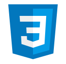

Olá
Sou Ramon
Desenvolvedor de Software
Olá, eu sou o Ramon. Estudante de Análise e Desenvolvimento de Sistemas (ADS), focado em construir uma base sólida em lógica de programação e arquitetura de software. Atualmente, dedico meus estudos ao Python e tecnologias Web, buscando criar soluções que unam eficiência e boas práticas de desenvolvimento.
Download CV- Projetos Práticos
- Aprendizado Contínuo
- HTML • CSS • JavaScript • Python




HTML5 ★ CSS ★ JavaScript(JS) ★ Python ★ HTML5 ★ CSS ★ JavaScript(JS) ★ Python ★ HTML5 ★ CSS ★ JavaScript(JS) ★ Python ★ HTML5 ★ CSS ★ JavaScript(JS) ★ Python ★ HTML5 ★
HTML5 ★ CSS ★ JavaScript(JS) ★ Python ★ HTML5 ★ CSS ★ JavaScript(JS) ★ Python ★ HTML5 ★ CSS ★ JavaScript(JS) ★ Python ★ HTML5 ★ CSS ★ JavaScript(JS) ★ Python ★ HTML5 ★
Sobre
Sou estudante de Análise e Desenvolvimento de Sistemas (ADS). Minha jornada na tecnologia começou durante o curso de Eletrotécnica, onde me apaixonei pela lógica de programação ao criar ferramentas de automação para cálculos elétricos.
Desenvolvi e publiquei na Play Store o aplicativo Quiz MSA Pro, focado em educação musical, utilizando plataformas de desenvolvimento visual para solucionar problemas da minha comunidade. Atualmente, estou transicionando da área de crédito consignado para a tecnologia, focando meus estudos em Python e desenvolvimento de sistemas. Busco aplicar minha experiência com regras de negócio e raciocínio lógico em soluções de software eficientes e inovadoras.